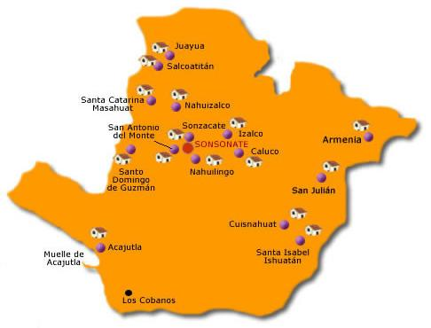

El Departamento esta ubicado en la zona occidental del pais. Tiene un area de 1,225.77 kilometros cuadrados y una poblacion estimada de 438 960 habitantes (2007), con una densidad demografica de aproximadamente 423 hab/km².
La mayor parte de la poblacion tiende a concentrarse en las zonas montañosas intermedias, particularmente en los municipios de Sonsonate, Izalco, Acajutla, Nahuizalco y Armenia, que son los que desarrollan la mayor parte de las actividades economicas del departamento. Los principales recursos economicos proceden del sector agropecuario. En este destacan los cultivos de maiz y de otros granos basicos en todos los municipios y el de cafe en los de Juayua, Salcoatitlan, Santa Catarina Masahuat, Nahuizalco e Izalco, en los que tambien se producen caña de azucar, balsamo, coco y frutas citricas. La cria de ganado vacuno, porcino y equino y la apicultura estan igualmente extendidos. En el marco de las actividades economicas primarias pueden considerarse igualmente la pesca fluvial, que tiene un caracter local y de subsistencia, y la comercial en aguas del Pacifico. Las actividades industriales han cobrado un fuerte impulso, sobre todo en los rubros de la alimentaria (beneficiado de cafe, refino de azucar, conservas), textil (procesamiento de algodon) y manufactura de tabaco (cigarrillos) en Sonsonate; cabe señalar tambien el refineria de petroleo, la metalurgia y la produccion de fertilizantes. Sobresale el estrategico puerto de Acajutla, el mas moderno y con mayor importancia comercial del pais. La artesania elaborada en los centros de Nahuizalco, Izalco, Armenia y Cuisnahuat continua siendo otro importante segmento de la economia departamental. Asi mismo, existen diversos centros turisticos, como las playas Los Cobanos o Metalio, en su extenso litoral. Sonsonate cuenta con una compleja red de comunicaciones, tanto por via terrestre, como maritima.
En la zona existe la denominada Ruta de las Flores recorrido que incluye la visita a poblados ricos en tradiciones de este departamento y Ahuachapan. Tales municipios incluyen a Nahuizalco, Salcoatitan, Juayua, Apaneca, Concepcion de Ataco y Tacuba.1 Esta tambien la Ruta de los Naranjos que ofrece diversas actividades de montaña, uno de los grandes atractivos turisticos es el complejo natural "Parque nacional los volcanes" que comparte con el departamento de Santa Ana, Sonsonate es llamada la cuna del montañismo Salvadoreño debido a su situacion geografica en la cordillera Apaneca-Lamatepec, los volcanes Izalco y San Marcelino estan dentro de su jurisdiccion y el arrecife de coral llamado "Los cobanos" En la costa cuenta con hoteles como la cadena "Royal Decameron Salinitas" que cuenta con una superficie de 270.000 m² y una amplia playa de arena de aproximadamente 1 km de largo, su mayor atractivo es su hermosa piscina de agua salada y sus 570 habitaciones, restaurantes, bares, spas y toda una gama de entretenimiento para el turista nacional e internacional Sonsonate es la actual cuna de la cultura Pipil, su riqueza colonial, su imponente paisaje montañoso y los pueblos pintorescos de alrededor hace de este departamento de El Salvador convertirse en uno de los mas bellos atractivos naturales y culturales del pais.
Regresar